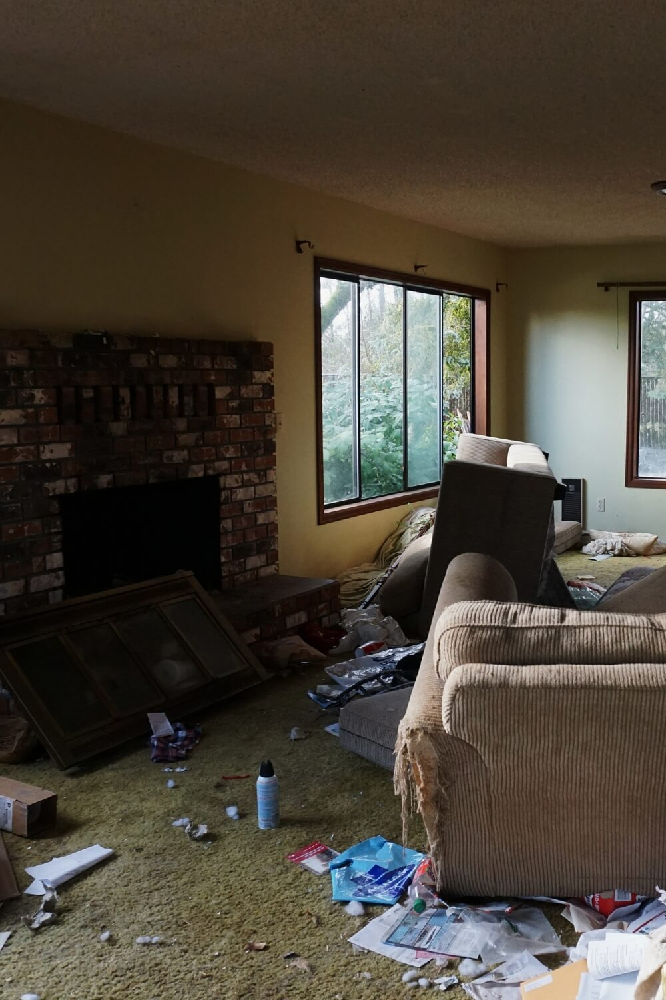
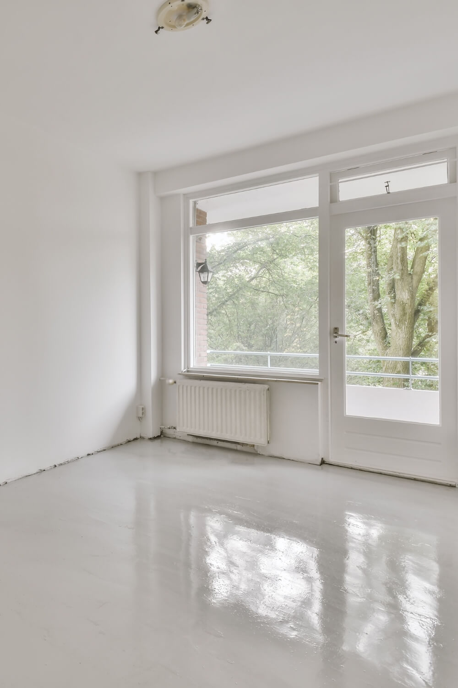
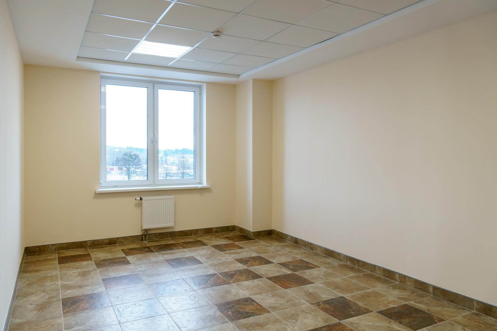

Rychle, důkladně a s maximálním respektem
Pracujeme rychle, důkladně a s maximálním respektem k situaci.
Zanechaný byt po nájemnících? Silně znečištěné prostory? Byt po dlouhodobě nemocné osobě? Sanace SF zajišťuje kompletní vyklízení, hloubkové čištění, dezinfekci a ekologickou likvidaci odpadu.
Poptat vyklízení
Pracujeme rychle, důkladně a s maximálním respektem k situaci.


Zajišťujeme kompletní vyklízení prostor (včetně stržení starých podlah či koberců), hloubkové čištění, profesionální dezinfekci a ekologickou likvidaci odpadu.
Při práci postupujeme s maximální poctivostí. Jakékoliv nalezené cennosti, šperky, hotovost nebo osobní dokumenty vám okamžitě předáme.
Běžně znečištěný byt jsme schopni kompletně vyklidit a vydezinfikovat během 1 až 2 pracovních dnů.
Ano, k likvidaci pachů používáme profesionální generátory ozonu, které pachy nepřekrývají, ale trvale ničí jejich molekuly.
Ano, veškerý odpad a staré vybavení naložíme a zajistíme jejich legální a ekologickou likvidaci.
Ano, nabízíme možnost následných stavebních prací, jako je výmalba, renovace podlah nebo drobné opravy, aby byl prostor ihned připraven k užívání.
Kontaktujte nás pro rychlou pomoc a nezávaznou kalkulaci. Cenovou nabídku zpracováváme do 24 hodin.
Chci cenovou nabídku